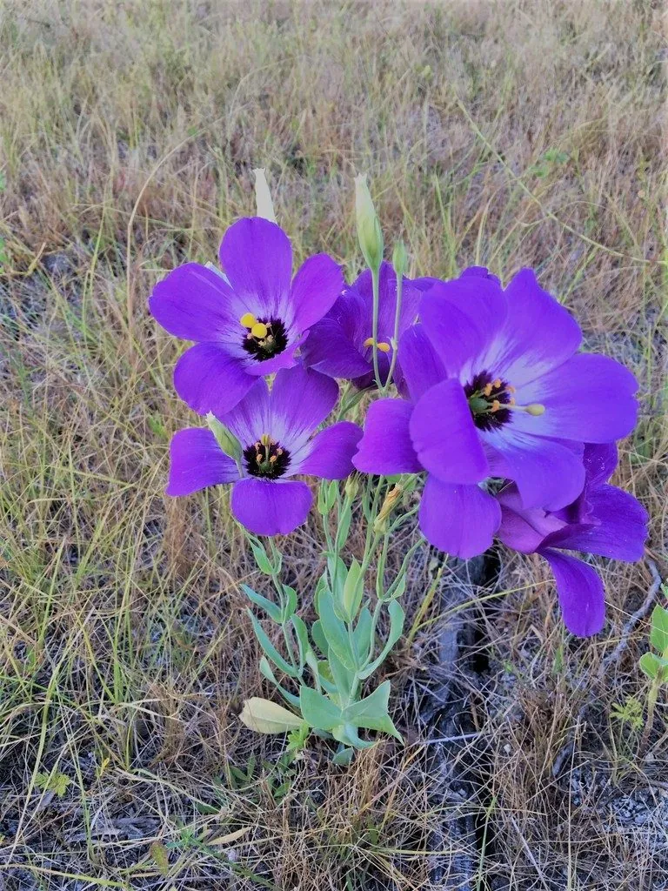

花卉与草本 · 植物界
洋桔梗 Eustoma grandiflorum

龙胆科一二年生草本，花形似玫瑰而更柔美，色彩淡雅，是近年流行的切花与盆花之一，原产美国中南部。
- 分类
- 门被子植物门纲木兰纲目龙胆目科龙胆科属洋桔梗属
- 栖息环境
- 美国中南部的草原与河岸，喜温暖、阳光充足的环境
- 地理分布
- 原产美国中南部，日本、荷兰及中国云南等地广泛栽培
- 保护级别
- 暂无评估
物种志
洋桔梗为龙胆科洋桔梗属一二年生草本，株高 30–100 厘米，茎直立，被白粉。叶片灰绿色，卵形至长椭圆形，对生，稍肉质。花单生或成圆锥花序，花冠钟状，直径 5–8 厘米，花瓣边缘常呈波状，有单瓣和重瓣，花色有白、粉、紫、蓝等，花期 5–9 月，果期 7–10 月。
洋桔梗原产美国中南部草原，喜温暖、阳光充足和通风良好的环境，苗期需经低温才能顺利开花，夏季高温时生长缓慢。它虽名为“桔梗”，却与桔梗科无关，而是龙胆科的成员，因花形似桔梗而得名。洋桔梗切花寿命长、花瓣不易脱落，可用于花束、婚礼用花和瓶插；日本、荷兰是主要的育种和切花生产国，中国云南也有大面积栽培。
形态与习性
- 株高30–100 厘米，茎被白粉
- 花期5–9 月，单朵开放 1–2 周
- 果期7–10 月，蒴果
- 光照喜充足阳光，夏季需适度遮阴
- 水分喜湿润，忌积水烂根
- 土壤疏松肥沃、排水良好的壤土，pH 6–7
- 繁殖以播种繁殖为主
- 主要用途切花、花束、婚礼用花
趣味知识
- 洋桔梗名中有“桔梗”，其实属于龙胆科，与桔梗科没有亲缘关系。
- 它的花瓣质地柔软且不易脱落，瓶插寿命可达 1–2 周。
- 洋桔梗幼苗需经过低温期才能诱导花芽，育苗期约 3 个月。
- 日本育种家培育出大量重瓣品种，使洋桔梗常被误认作玫瑰。